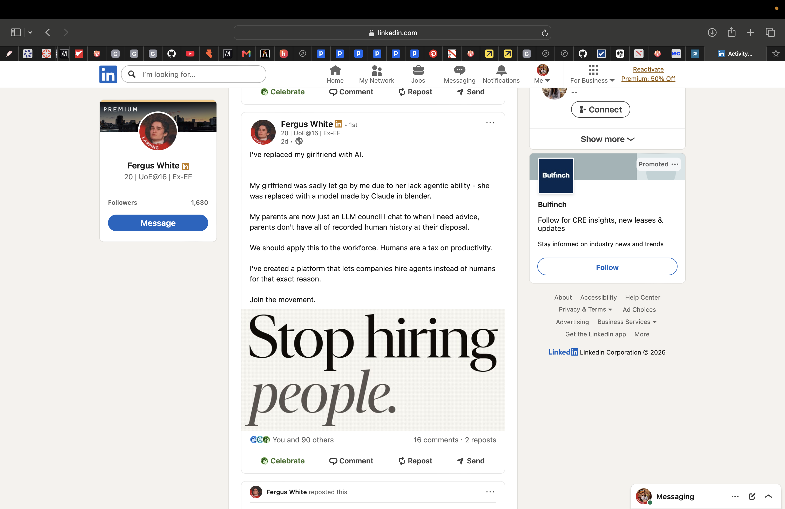
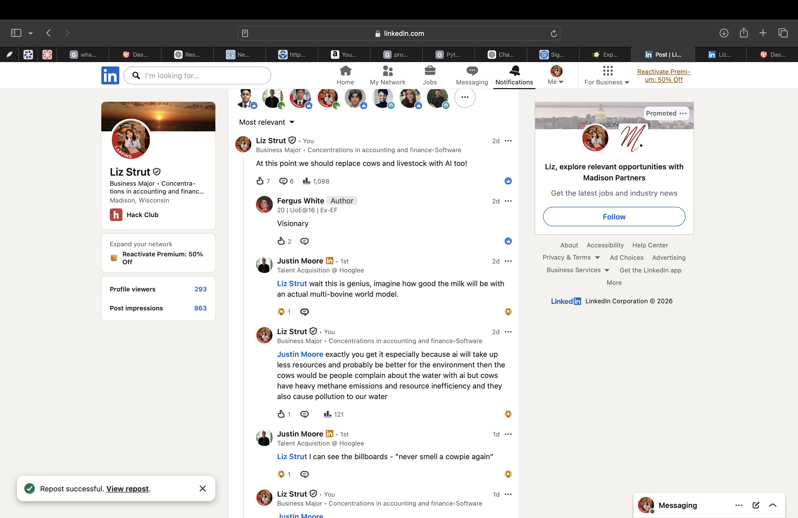
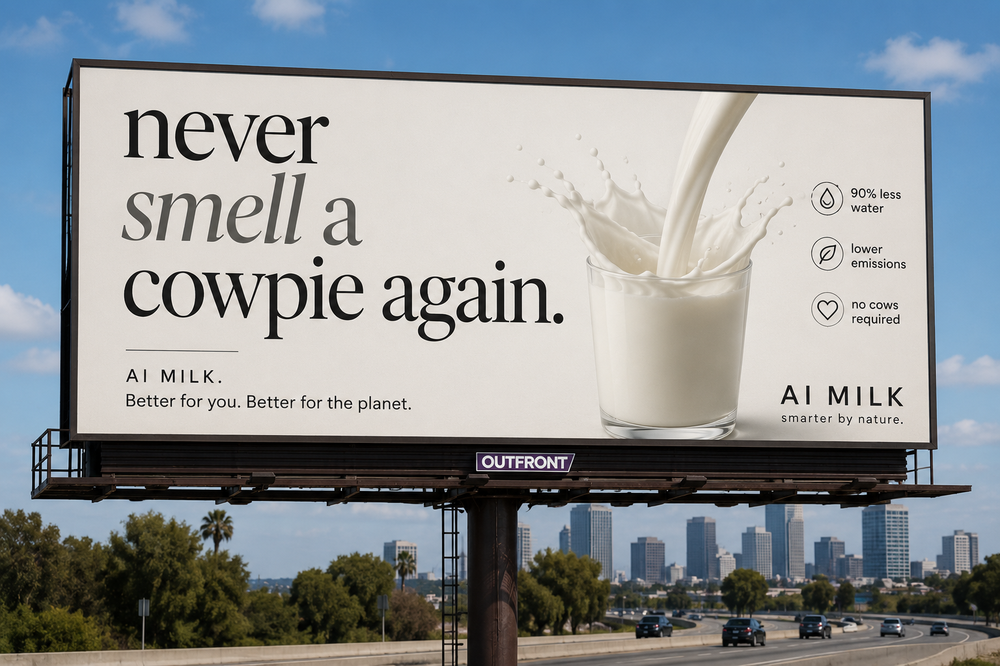

It all started with this post from linkedln. Fergus is the founder of Larp Co and he made a post about replacing his girlfriend with AI for effiency which got me thinking at that point to replace farming with AI.

I commented at first joking about replacing livestock and cows with AI. But then Justin Moore, a talent acquistion told that this was a genius idea. And that got me thinking about the environmental impacts. Justin Moore said that he could imagine the billboards that said "never smell a cow pie again" So I created the billboard using the one and only ChatGPT.
